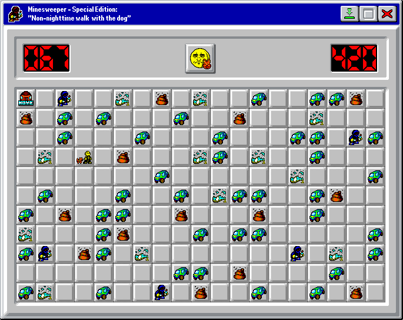

❤️ And to conclude... + 🗣️ Comment Section
Written and edited from and to 30·Oct·2026 and the idea from 29·Oct·2026. The pixel-art was made partly from scratch and partly by modifying existing assets, from 29·Oct·2026 and exactly midnight to 30·Oct·2026Telegram: Ita. · Eng.
Mastodon: Ita. · Eng.
Bluesky · Ludomedia · Reddit